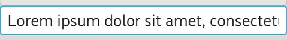

A [EditWidget](#EditWidget) EditWidget is a thin veneer over TextWidget that configures itself
to be editable. Via this component developer can know what developer type in.

In this section, you can know how to use the EditWidget.
const String TextWidgetTest::dummyText("input what you want");
// Customize your own text change watcher
class MyTextWatcher : public gaia::text::TextWatcher {
private:
Page mpPage;
public:
explicit MyTextWatcher(Page page) : mpPage(page) {
// call while focus on EditText and user start to input text to EditText
void beforeTextChanged(const gaia::base::CharSequence* s, int32_t start,
int32_t count, int32_t after) {
GLOG(LOG_TAG, LOGDBG, "beforeTextChanged: String= %s", (s->toString()).string());
};
// call while user ongoing chnage the text in EditText
void onTextChanged(const gaia::base::CharSequence* s, int32_t start,
int32_t before, int32_t count) {
GLOG(LOG_TAG, LOGDBG, "onTextChanged: String= %s", (s->toString()).string());
};
// call while user finish change the text in EditText
void afterTextChanged(const gaia::text::Editable* s) {
GLOG(LOG_TAG, LOGDBG, "AfterTextChanged: String= %s", (s->toString()).string());
};
};
void EditWidgetTest::onInit(
gaia::core::Persistence* const savedInstanceState) {
mpScene = Scene::SceneFactory(static_cast(this));
LinearController* mpDashboard;
mpDashboard = new LinearController(this);
mpDashboard->setOrientation(LinearController::VERTICAL);
mpCp_WW = new ControllerParams(ControllerParams::WRAP_CONTENT,
ControllerParams::WRAP_CONTENT);
EditWidget* mpEditTarget = new EditWidget(this);
mpEditTarget->setText(dummyText);
mpwatcher = new MyTextWatcher(this);
// add textwatcher to EditText to information developer user change the text in EditText.
mpEditTarget->addTextChangedListener(mpwatcher);
mpDashboard->addWidget(mpEditTarget, mpCp_WW);
mpScene->attachController(mpDashboard);
mpScene->setupSceneLayout();
}
Add fragment to TabPageController.
// Set the selection anchor to <code>start</code> and the selection edge to stop.
void setSelection(int32_t start, int32_t stop);
// Move the cursor to offset index
void setSelection(int32_t index);
// Select the entire text.
void selectAll();
// Move the selection edge to offset <code>index</code>.
void extendSelection(int32_t index);